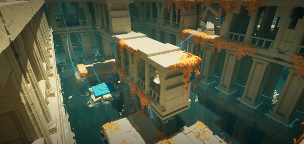

Overview
Vessel is a multi-perspective puzzle game where you harness the power of object swapping to carve your path forward. Immerse yourself in the exploration of a forgotten underwater civilization, unveiling its mysteries as you navigate its intricate and atmospheric world.
Game Design
